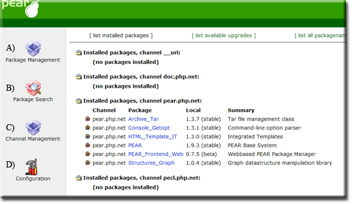
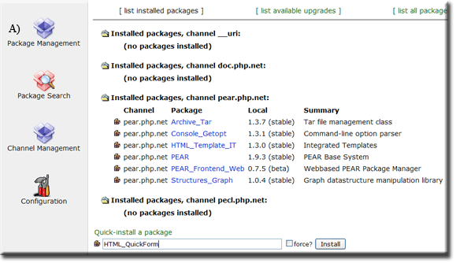
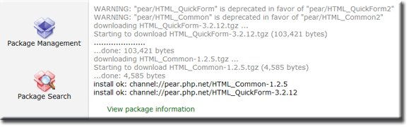
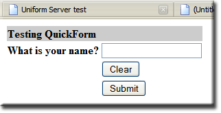

|
|
PHP - PEAR Web Frontend |
The PHP Extension and Application Repository (or PEAR for short) contains re-usable code. The PEAR core has been preinstalled (Module ZeroXIII_pear_1_0_2) this page covers the PEAR Web Frontend
Open PEAR Web Frontend
You can access the web-front-end at any time using either of the following methods:
|
Method 1 PHP > View Pear frontend |
Method 2 http://localhost/us_pear/index.php |
Using PEAR Frontend
Open the PEAR front-end using one of the methods explaind above.
Installing PEAR packages is very easy. To confirm our PEAR installation is working and to demonstrate how to install packages, we will be using a package named HTML_QuickForm
Update the Channel Management system
|
Before downloading any package, update the Channel Management system
You will receive something similar this: Updating channel "doc.php.net" Update of Channel "doc.php.net" succeeded Updating channel "pear.php.net" Channel "pear.php.net" is up to date Updating channel "pecl.php.net" Channel "pecl.php.net" is up to date |
 |
Downloading modules
|
Downloading a known package (example HTML_QuickForm)
|
 |
|
 |
Although we intended to only download and install a single package, two were installed. The package HTML_QuickForm will not function without package HTML_Common; it depends on this being in place. In other words, when installing a package, all dependencies that do not exist are also installed. |

|
Form - Test Script
Create a new text file named form.php with the following content and save to folder UniServerZ\www
<!DOCTYPE HTML PUBLIC "-//W3C//DTD HTML 4.0 Transitional//EN">
<html>
<head>
<meta http-equiv="Content-Type" content="text/html; charset=UTF-8">
<title>Pear HTML_QuickForm test</title>
</head>
<body>
<?php
require_once "HTML/QuickForm.php";
$form = new HTML_QuickForm('frmTest', 'get');
$form->addElement('header', 'MyHeader', 'Testing QuickForm');
$form->addElement('text', 'MyTextBox', 'What is your name?');
$form->addElement('reset', 'btnClear', 'Clear');
$form->addElement('submit', 'btnSubmit', 'Submit');
$form->display();
?>
</body>
</html>
Test:
|
 |
Where to next
Background information for installing Pear:
PHP - PEAR Auto Install go-pear - This page covers using go-pear that automats the installation process.
PHP - PEAR Manual Install - This page covers manual PEAR installation.